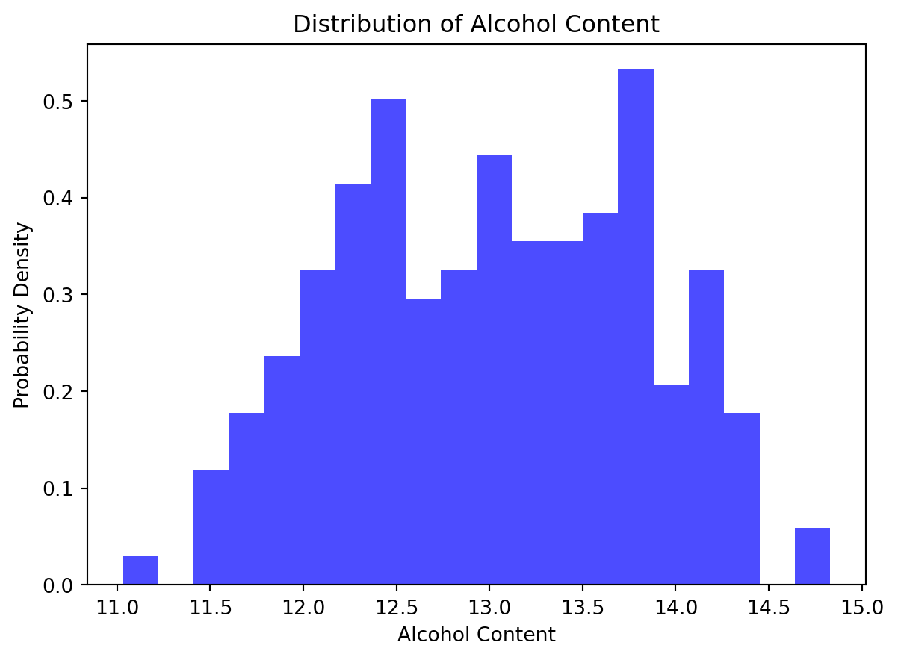
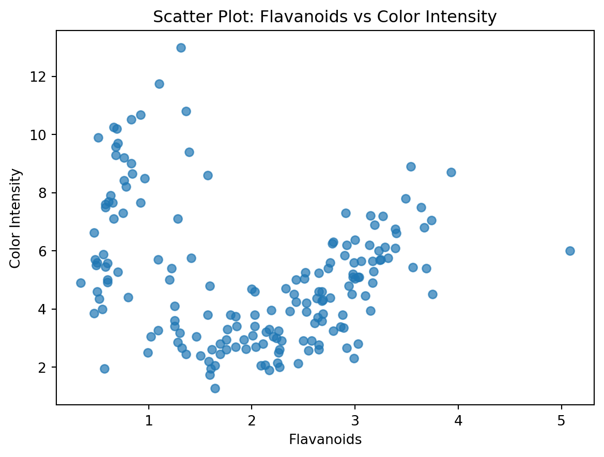
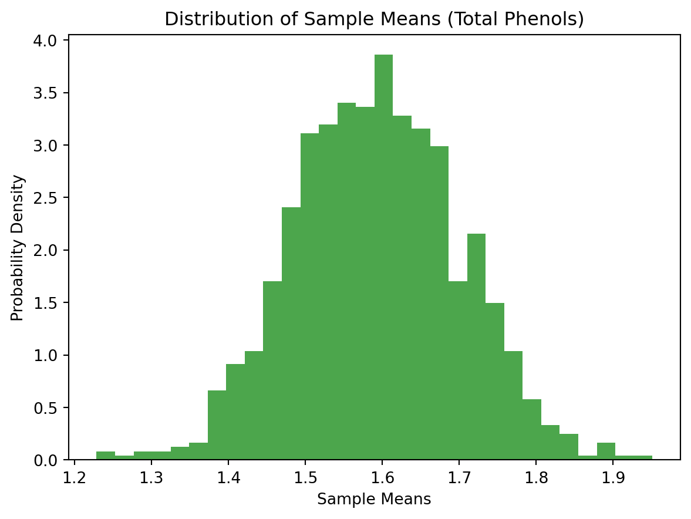

Probability theory is the mathematical framework for dealing with uncertainty. In machine learning, where decisions are often made based on incomplete or noisy data, understanding probability is paramount. At its core, probability theory allows us to quantify uncertainty and make informed decisions.
Random Variables:
Random variables are a key concept in probability theory. They represent quantities that can take on different values, each with a certain probability. In the context of machine learning, random variables are used to model the uncertainty inherent in data and predictions.
Consider a scenario where we are predicting the outcome of a coin toss. The result, whether heads or tails, is a random variable with equal probabilities. In machine learning, we often deal with more complex random variables representing features of data or the outcomes of various events.
Probability Distributions:
A probability distribution describes the likelihood of different outcomes in a random experiment. Common probability distributions include the uniform, normal (Gaussian), and binomial distributions. In machine learning, understanding the distribution of data is crucial for building accurate models.
Role in Machine Learning Code:
Let’s explore how probability theory and random variables manifest in machine learning code.
In classification problems, for instance, we use probability distributions to estimate the likelihood of a data point belonging to a particular class. This is often done through algorithms like Naive Bayes or logistic regression.
Probability theory and random variables serve as the bedrock of insights in machine learning, unveiling patterns and relationships hidden within datasets. In this journey, we’ll explore these concepts using scikit-learn’s Wine dataset, showcasing practical demonstrations that demystify complex statistical concepts.
Unveiling Normality:
Z-Scores and Alcohol Content Let’s embark on a journey of normality using the Wine dataset. Selecting the alcohol content as our protagonist, we delve into its distribution. Visualizing this through a histogram, we witness the elegance of probability distributions. Calculating Z-scores adds a layer of statistical prowess, unraveling the probability density of each data point.
from sklearn.datasets import load_wineimport matplotlib.pyplot as pltfrom scipy.stats import zscorewine = load_wine()alcohol_content = wine.data[:, 0]# Plot histogramplt.hist(alcohol_content, bins=20, density=True, alpha=0.7, color='blue')# Calculate Z-scoresz_scores = zscore(alcohol_content)plt.title("Distribution of Alcohol Content")plt.xlabel("Alcohol Content")plt.ylabel("Probability Density")plt.show()

Conditional Harmony:
Flavanoids and Color Intensity Next, we navigate the realm of conditional probability with a captivating scatter plot. The protagonists, flavanoids, and color intensity, engage in a visual dance, revealing how changes in one feature influence the probability distribution of another. This demonstration bridges the abstract with the tangible, making conditional probability an intuitive concept.
from sklearn.datasets import load_wineimport matplotlib.pyplot as pltwine = load_wine()flavanoids = wine.data[:, 6] # Flavanoidscolor_intensity = wine.data[:, 9] # Color intensity# Scatter plotplt.scatter(flavanoids, color_intensity, alpha=0.7)plt.title("Scatter Plot: Flavanoids vs Color Intensity")plt.xlabel("Flavanoids")plt.ylabel("Color Intensity")plt.show()

Harmonizing with the Central Limit Theorem:
Total Phenols Symphony As we shift our focus to the central limit theorem, we choose total phenols as our musical notes. Through a symphony of sample means, we showcase how the distribution converges to a normality as the sample size increases. This exploration sheds light on the inherent beauty of statistical regularities within diverse datasets.
from sklearn.datasets import load_wineimport matplotlib.pyplot as pltimport numpy as npwine = load_wine()total_phenols = wine.data[:, 8] # Total phenolssample_means = [np.mean(np.random.choice(total_phenols, size=30)) for _ inrange(1000)]# Plot distribution of sample meansplt.hist(sample_means, bins=30, density=True, alpha=0.7, color='green')plt.title("Distribution of Sample Means (Total Phenols)")plt.xlabel("Sample Means")plt.ylabel("Probability Density")plt.show()

Conclusion:
Probability theory and random variables aren’t mere theoretical constructs but guiding stars illuminating the path to machine learning insights. Through the lens of the Wine dataset, we’ve navigated the seas of normality, conditional probability, and the harmonious central limit theorem. Armed with this understanding, machine learning practitioners can craft more informed models and make data-driven decisions.
References have been taken from various sourc es on the Internet.